Materialpaket Advent und Winter für die 6. Klasse: 7 Lesespurgeschichten mit Rätselaufgaben (Weihnachtsbasar, Saturnalien, Lichterfeste & mehr)

St.-Martins-Laterne aus einem Blatt – falten, einschneiden, rollen, mit Martinsgeschichte, 3-fach differenziert (Klasse 2/3)

Herbst-Klappkarte Eichhörnchen – Figurenkarte basteln mit Sachtext, 3-fach differenziert (Tiere im Herbst, Klasse 2/3)

Flatter-Fledermaus am Stab – bewegliche Bastelfigur mit Sachtext, 3-fach differenziert (Halloween/Herbst, Klasse 2/3)

Spinnen-Rätsel-Faltkarte – Halloween-Rätsel lesen und schreiben, Pop-up-Spinne, 3-fach differenziert (Klasse 2/3)

Mein Grusel-Meter – Halloween-Drehkarte basteln, Adjektive steigern und vergleichen, 3-fach differenziert (Klasse 2/3)

Klapp-Spukhaus zu Halloween – Bastelvorlage mit Schreibanlass und Wortspeicher, 3-fach differenziert (Klasse 3/4)

Materialpaket Herbst-Lesespuren für die 3. Klasse: 7 Lesespurgeschichten mit Rätselaufgaben (Kürbis, Igel, Laterne, Halloween & mehr)

Die Gleichnisse Jesu – verlorenes Schaf, barmherziger Samariter – Lesespurgeschichte mit Rätselaufgaben (Klasse 3)

Herbstgedichte – reimen, vortragen, selbst dichten – Lesespurgeschichte mit Rätselaufgaben (Klasse 3)

Lichterfeste in den Religionen – Diwali, Chanukka, Martinstag, Advent – Lesespurgeschichte mit Rätselaufgaben (Klasse 6)

Der Kanon – eine Melodie, viele Stimmen – Lesespurgeschichte mit Rätselaufgaben (Klasse 3)

Musikinstrumente der Welt – eine Reise durchs Museum – Lesespurgeschichte mit Rätselaufgaben (Klasse 3)

Weihnachtslieder – Musik im Advent – Lesespurgeschichte mit Rätselaufgaben (Klasse 3)

Volkstanz und Tanzfest – Tänze im Takt – Lesespurgeschichte mit Rätselaufgaben (Klasse 3)

Takt und Rhythmus – Lesespurgeschichte mit Rätselaufgaben (Klasse 3)

Medien-Detektive unterwegs – Lesespurgeschichte mit Rätselaufgaben (Klasse 3)

Wichtel beschreiben: Schreibanlass mit 4 Wichtelbildern, Wortspeicher und Checkliste (Klasse 3–4)

DaZ-Wortschatz Materialpaket: 6 Wortfelder differenziert A1/A2/B1 – Hörszenen (QR), Lückentexte, Rollenspiele, Sprechkarten

DaZ-Wortschatz Körper und Gesundheit – differenziert A1/A2/B1: Hörszene (QR), Lückentexte, Rollenspiel

DaZ-Wortschatz Unterwegs in der Stadt – differenziert A1/A2/B1: Hörszene (QR), Lückentexte, Rollenspiel

DaZ-Wortschatz Mein Zuhause – differenziert A1/A2/B1: Hörszene (QR), Lückentexte, Rollenspiel

DaZ-Wortschatz Kleidung und Wetter – differenziert A1/A2/B1: Hörszene (QR), Lückentexte, Rollenspiel

DaZ-Wortschatz Essen und Trinken – differenziert A1/A2/B1: Hörszene (QR), Lückentexte, Rollenspiel

DaZ-Wortschatz In der Schule – differenziert A1/A2/B1: Hörszene (QR), Lückentexte, Rollenspiel
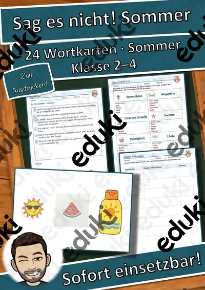
Wortspiele: Sag es nicht! Sommer – Klasse 2–4
Wortspiele: Sag es nicht! Im Restaurant – Klasse 2–4
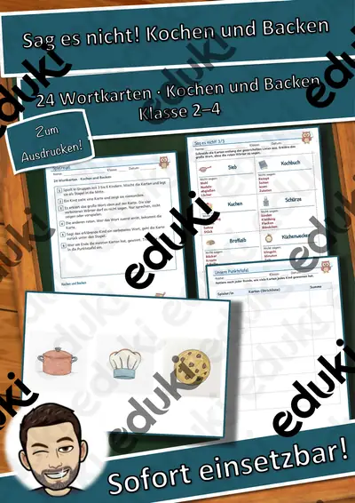
Wortspiele: Sag es nicht! Kochen und Backen – Klasse 2–4
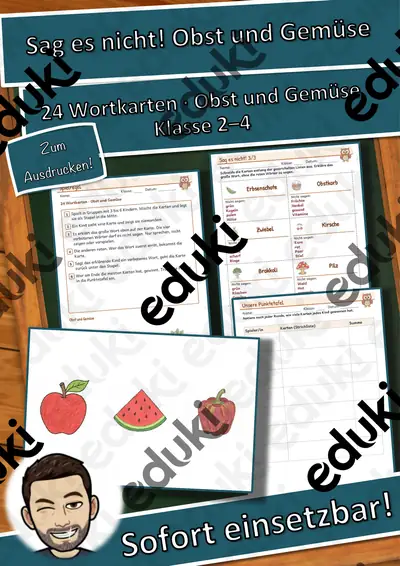
Wortspiele: Sag es nicht! Obst und Gemüse – Klasse 2–4
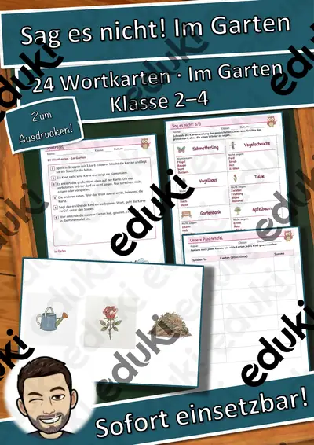
Wortspiele: Sag es nicht! Im Garten – Klasse 2–4
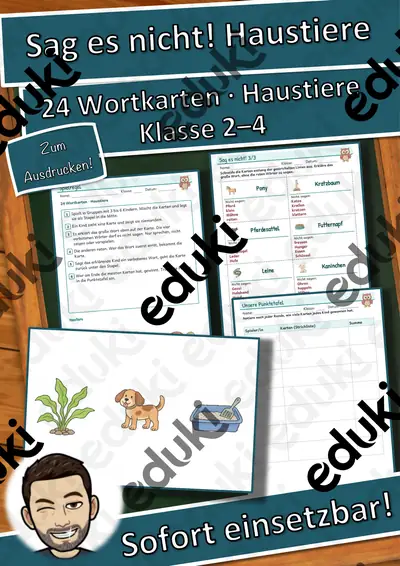
Wortspiele: Sag es nicht! Haustiere – Klasse 2–4
Wortspiele: Sag es nicht! Zirkus – Klasse 2–4
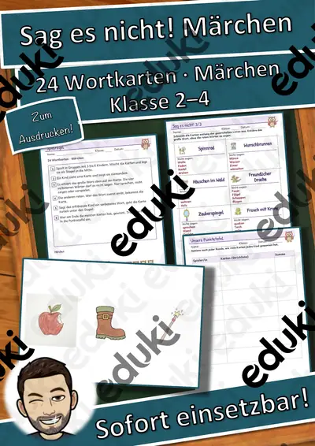
Wortspiele: Sag es nicht! Märchen – Klasse 2–4
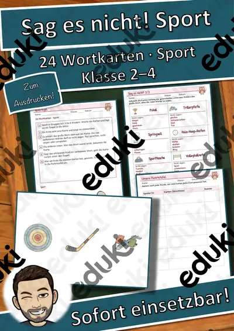
Wortspiele: Sag es nicht! Sport – Klasse 2–4
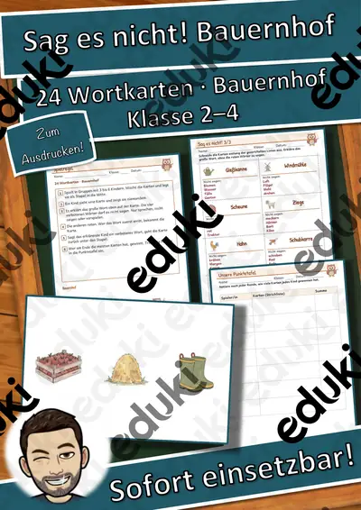
Wortspiele: Sag es nicht! Bauernhof – Klasse 2–4

Präteritum – Übungsheft mit Postern, regelmäßige und unregelmäßige Verben Kl. 3–4
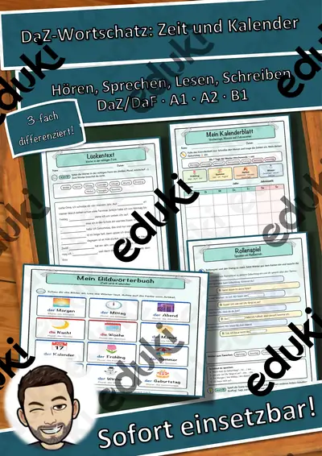
DaZ Zeit und Kalender: Wochentage, Monate, Jahreszeiten A1/A2/B1, QR

Gedichte schreiben – Übungsheft mit Postern, Kl. 3–4
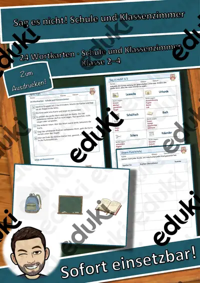
Wortspiele: Sag es nicht! Schule und Klassenzimmer – Klasse 2–4

Satzglieder – Übungsheft mit Postern, Umstellprobe, Fragen und Satz-Baukasten Kl. 3–4
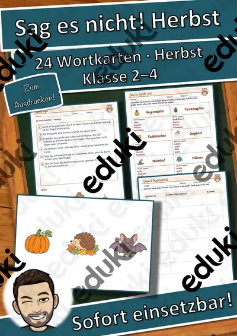
Wortspiele: Sag es nicht! Herbst – Klasse 2–4

Wörtliche Rede – Übungsheft mit Postern, Redebegleitsätzen und Comic-Dialogen Kl. 3–4
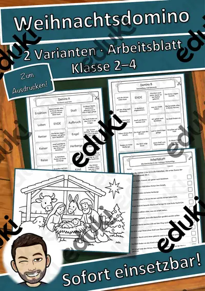
Weihnachtsgeschichte als Domino: Religion in 2 Varianten mit Stichwörtern und Sätzen (Klasse 2–4)
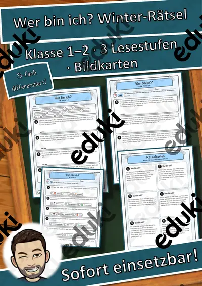
Winter-Rätselwerkstatt Materialpaket: Wer bin ich? + Krimi-Rätselheft + Logicals – 3 Rätselhefte in 3 Stufen (Klasse 1–4)
Logicals „Wer ist wer?“ im Winter: 11 Logikrätsel in 3 Stufen mit Kreuztabelle und Lösungen (Klasse 2–4)
Krimi-Rätselheft „Der verschwundene Klassenschlitten“: eigener Fall mit Spuren, Tabelle und Geheimschrift in 3 Stufen (Klasse 2–3)

Schreibwerkstatt Vorgangsbeschreibung – Gesamtpaket: alle 12 Einheiten in 3 Stufen (Klasse 3–5)

Schreibwerkstatt Vorgangsbeschreibung – Paket Alltag, Sport & Technik: 4 Einheiten in 3 Stufen (Klasse 3–5)

Schreibwerkstatt Vorgangsbeschreibung – Paket Basteln & Natur: 4 Einheiten in 3 Stufen (Klasse 3–5)

Schreibwerkstatt Vorgangsbeschreibung – Paket Küche & Experimente: 4 Einheiten in 3 Stufen (Klasse 3–5)
Schreibwerkstatt Vorgangsbeschreibung: Einen Text am Computer speichern – 3 Stufen & Kurztest (Klasse 3–5)

Schreibwerkstatt Vorgangsbeschreibung: Futterglocke für Vögel herstellen – 3 Stufen & Kurztest (Klasse 3–5)
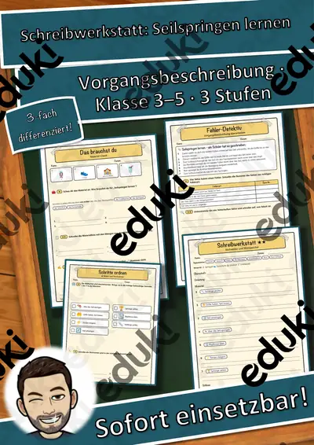
Schreibwerkstatt Vorgangsbeschreibung: Seilspringen lernen – 3 Stufen & Kurztest (Klasse 3–5)
Schreibwerkstatt Vorgangsbeschreibung: Schuhe mit Schleife binden – 3 Stufen & Kurztest (Klasse 3–5)
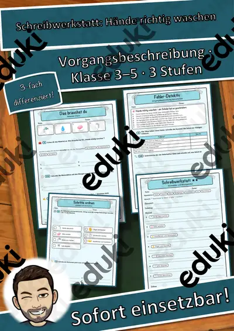
Schreibwerkstatt Vorgangsbeschreibung: Hände richtig waschen – 3 Stufen & Kurztest (Klasse 3–5)
Schreibwerkstatt Vorgangsbeschreibung: Freundschaftsband flechten – 3 Stufen & Kurztest (Klasse 3–5)
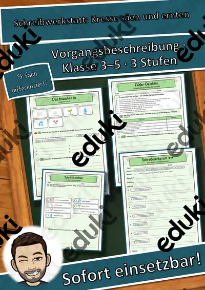
Schreibwerkstatt Vorgangsbeschreibung: Kresse säen und ernten – 3 Stufen & Kurztest (Klasse 3–5)
Schreibwerkstatt Vorgangsbeschreibung: Papierflieger falten – 3 Stufen & Kurztest (Klasse 3–5)
Schreibwerkstatt Vorgangsbeschreibung: Tanzende Rosinen – 3 Stufen & Kurztest (Klasse 3–5)
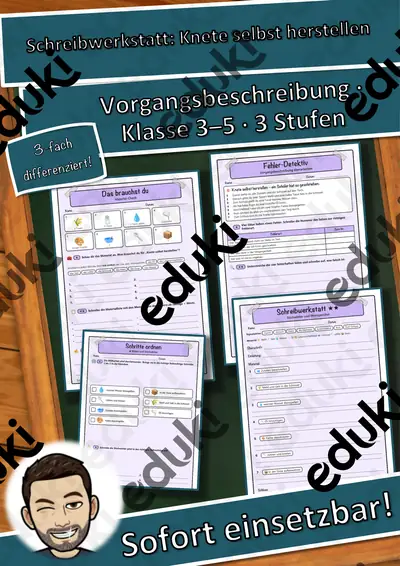
Schreibwerkstatt Vorgangsbeschreibung: Knete selbst herstellen – 3 Stufen & Kurztest (Klasse 3–5)
Schreibwerkstatt Vorgangsbeschreibung: Obstsalat zubereiten – 3 Stufen & Kurztest (Klasse 3–5)

Lesewinter Materialpaket Klasse 2, 3 und 4: 30 Wintertexte in je 3 Stufen – tägliche Lesezeit, Lesefluss-Training, Hörfassung (einmal zahlen)
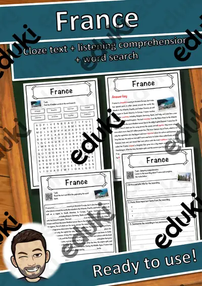
Lesewinter Klasse 3: 10 Wintertexte in 3 Stufen – tägliche Lesezeit, Lesefluss-Training, Tandem-Lesen, Hörfassung
Schreibwerkstatt Vorgangsbeschreibung: Pfannkuchen backen – 3 Stufen & Kurztest (Klasse 3–5)
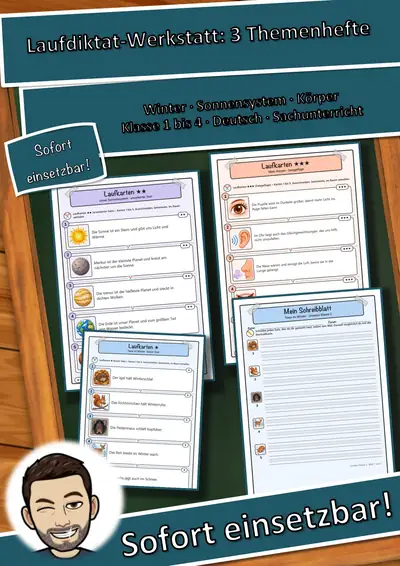
Laufdiktat-Werkstatt Materialpaket: 3 Themenhefte Sachwissen – 45 Sätze × 3 Stufen, Lineaturen, Quiz, Hördiktate (Klasse 1–4)
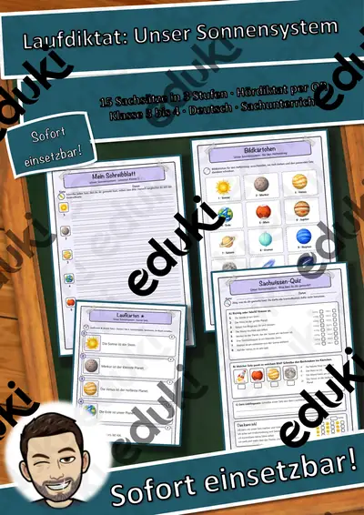
Laufdiktat Unser Sonnensystem – 15 Sachsätze in 3 Stufen, 3 Lineaturen, Quiz, Hördiktat per QR (Klasse 3–4)
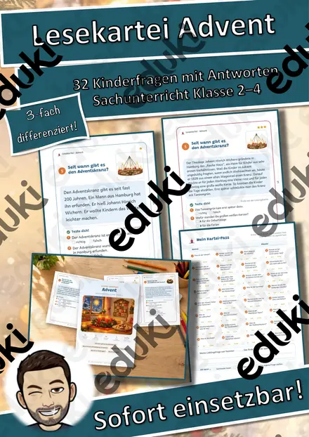
Lesekartei Advent – 32 Kinderfragen mit Antworten in 3 Stufen (Klasse 2–4)
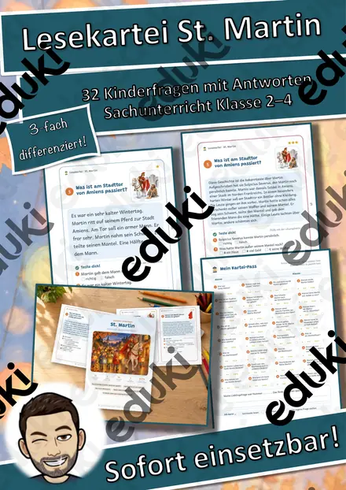
Lesekartei St. Martin – 32 Kinderfragen mit Antworten in 3 Stufen (Klasse 2–4)
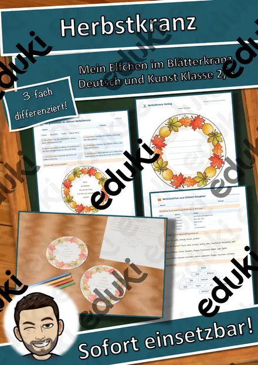
Herbstkranz mit Elfchen – Fensterbild gestalten und Herbstgedicht schreiben, 3-fach differenziert (Klasse 2/3)
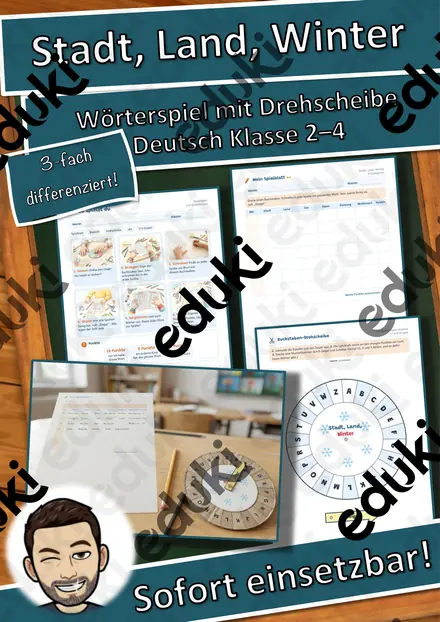
Stadt, Land, Winter – Wörterspiel mit Buchstaben-Drehscheibe, 3-fach differenziert (Deutsch Klasse 2–4)
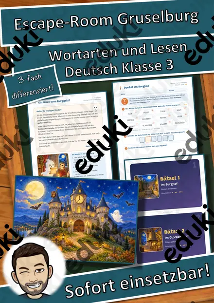
Escape-Room Gruselburg zu Halloween – Wortarten und Lesen, 3-fach differenziert (Klasse 3)

Adjektive-Rechtschreibung Adjektive (auch Homeschooling)

Adjektve Rechtschreibung, Adjektive Nomen zuordnen (auch Homeschooling)

Pommes - Adjektive steigern (auch Homeschooling) Rechtschreibung
Keine Materialien gefunden – versuch einen anderen Suchbegriff oder Filter.